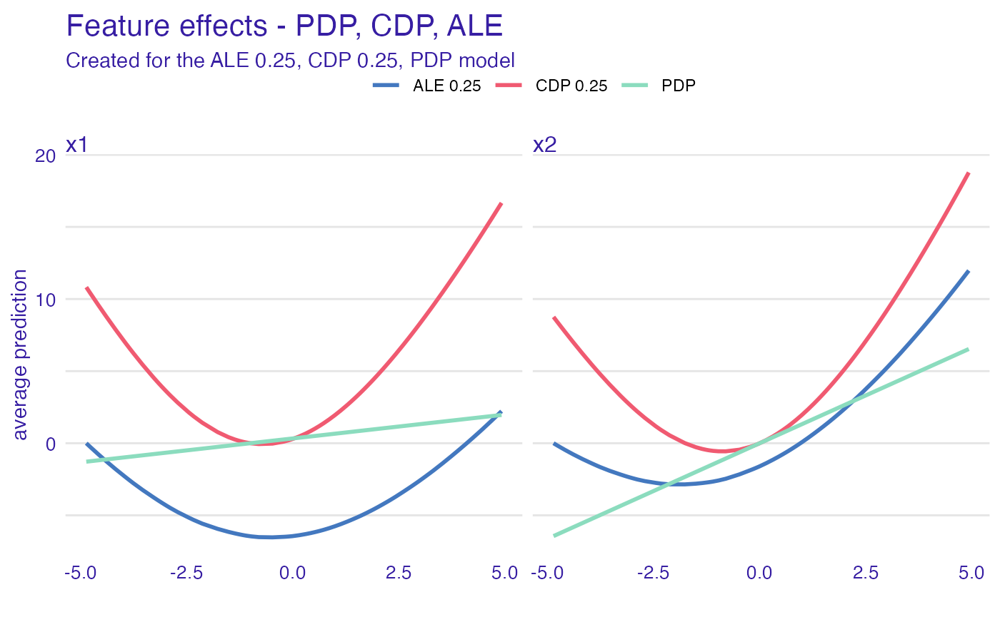
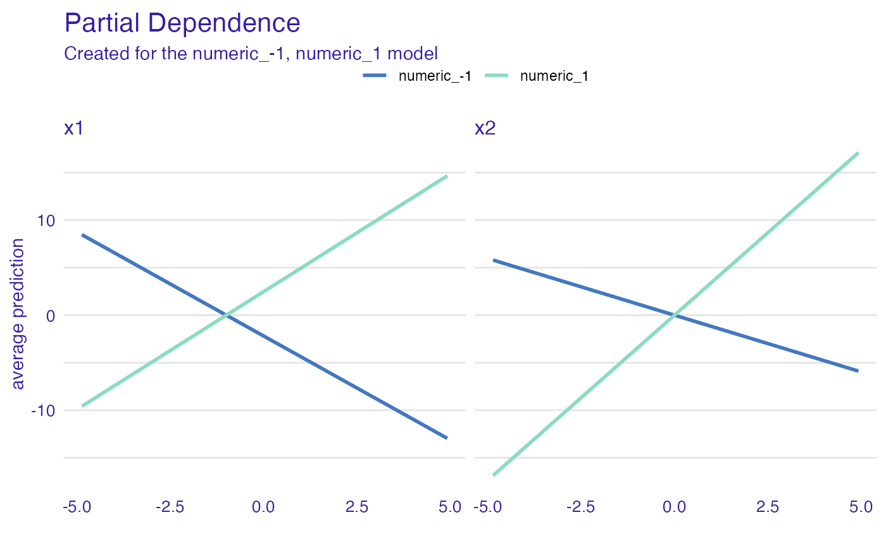

Simulated data, real problem
Przemyslaw Biecek
2020-03-22
Source:vignettes/vignette_simulated.Rmd
vignette_simulated.RmdSimulated data
Let’s consider a following problem, the model is defined as
\[ y = x_1 * x_2 + x_2 \]
But \(x_1\) and \(x_2\) are correlated. How XAI methods work for such model?
# predict function for the model
the_model_predict <- function(m, x) {
x$x1 * x$x2 + x$x2
}
# correlated variables
N <- 50
set.seed(1)
x1 <- runif(N, -5, 5)
x2 <- x1 + runif(N)/100
df <- data.frame(x1, x2)Explainer for the models
In fact this model is defined by the predict function the_model_predict. So it does not matter what is in the first argument of the explain function.
#> Preparation of a new explainer is initiated
#> -> model label : numeric ( [33m default [39m )
#> -> data : 50 rows 2 cols
#> -> target variable : not specified! ( [31m WARNING [39m )
#> -> model_info : package Model of class: numeric package unrecognized , ver. Unknown , task regression ( [33m default [39m )
#> -> predict function : the_model_predict
#> -> predicted values : numerical, min = -0.1726853 , mean = 7.70239 , max = 29.16158
#> -> residual function : difference between y and yhat ( [33m default [39m )
#> [32m A new explainer has been created! [39mCeteris paribus
Use the ceteris_paribus() function to see Ceteris Paribus profiles. Clearly it’s not an additive model, as the effect of \(x_1\) depends on \(x_2\).
library("ingredients")
library("ggplot2")
sample_rows <- data.frame(x1 = -5:5,
x2 = -5:5)
cp_model <- ceteris_paribus(explain_the_model, sample_rows)
plot(cp_model) +
show_observations(cp_model) +
ggtitle("Ceteris Paribus profiles")
Dependence profiles
Lets try Partial Dependence profiles, Conditional Dependence profiles and Accumulated Local profiles. For the last two we can try different smoothing factors
pd_model <- partial_dependence(explain_the_model, variables = c("x1", "x2"))
pd_model$`_label_` = "PDP"
cd_model <- conditional_dependence(explain_the_model, variables = c("x1", "x2"))
cd_model$`_label_` = "CDP 0.25"
ad_model <- accumulated_dependence(explain_the_model, variables = c("x1", "x2"))
ad_model$`_label_` = "ALE 0.25"
plot(ad_model, cd_model, pd_model) +
ggtitle("Feature effects - PDP, CDP, ALE")
cd_model_1 <- conditional_dependence(explain_the_model, variables = c("x1", "x2"), span = 0.1)
cd_model_1$`_label_` = "CDP 0.1"
cd_model_5 <- conditional_dependence(explain_the_model, variables = c("x1", "x2"), span = 0.5)
cd_model_5$`_label_` = "CDP 0.5"
ad_model_1 <- accumulated_dependence(explain_the_model, variables = c("x1", "x2"), span = 0.5)
ad_model_1$`_label_` = "ALE 0.1"
ad_model_5 <- accumulated_dependence(explain_the_model, variables = c("x1", "x2"), span = 0.5)
ad_model_5$`_label_` = "ALE 0.5"
plot(ad_model, cd_model, pd_model, cd_model_1, cd_model_5, ad_model_1, ad_model_5) +
ggtitle("Feature effects - PDP, CDP, ALE")
Dependence profiles in groups
And now, let’s see how the grouping factor works
# add grouping variable
df$x3 <- factor(sign(df$x2))
# update the data argument
explain_the_model$data = df
# PDP in groups
pd_model_groups <- partial_dependence(explain_the_model,
variables = c("x1", "x2"),
groups = "x3")
plot(pd_model_groups) +
ggtitle("Partial Dependence")
# ALE in groups
ad_model_groups <- accumulated_dependence(explain_the_model,
variables = c("x1", "x2"),
groups = "x3")
plot(ad_model_groups) +
ggtitle("Accumulated Local")# CDP in groups
cd_model_groups <- conditional_dependence(explain_the_model,
variables = c("x1", "x2"),
groups = "x3")
plot(cd_model_groups) +
ggtitle("Conditional Dependence")
Session info
#> R version 3.6.3 (2020-02-29)
#> Platform: x86_64-apple-darwin15.6.0 (64-bit)
#> Running under: macOS Catalina 10.15.3
#>
#> Matrix products: default
#> BLAS: /Library/Frameworks/R.framework/Versions/3.6/Resources/lib/libRblas.0.dylib
#> LAPACK: /Library/Frameworks/R.framework/Versions/3.6/Resources/lib/libRlapack.dylib
#>
#> locale:
#> [1] en_US.UTF-8/en_US.UTF-8/en_US.UTF-8/C/en_US.UTF-8/en_US.UTF-8
#>
#> attached base packages:
#> [1] stats graphics grDevices utils datasets methods base
#>
#> other attached packages:
#> [1] ggplot2_3.3.0 ingredients_1.1 DALEX_1.0.1
#>
#> loaded via a namespace (and not attached):
#> [1] Rcpp_1.0.4 compiler_3.6.3 pillar_1.4.3 tools_3.6.3
#> [5] digest_0.6.25 evaluate_0.14 memoise_1.1.0 lifecycle_0.2.0
#> [9] tibble_2.1.3 gtable_0.3.0 pkgconfig_2.0.3 rlang_0.4.5
#> [13] yaml_2.2.1 pkgdown_1.4.1.9000 xfun_0.12 withr_2.1.2
#> [17] stringr_1.4.0 dplyr_0.8.5 knitr_1.28 desc_1.2.0
#> [21] fs_1.3.2 rprojroot_1.3-2 grid_3.6.3 tidyselect_1.0.0
#> [25] glue_1.3.2 R6_2.4.1 rmarkdown_2.1 farver_2.0.3
#> [29] purrr_0.3.3 magrittr_1.5 backports_1.1.5 scales_1.1.0
#> [33] htmltools_0.4.0 MASS_7.3-51.5 assertthat_0.2.1 colorspace_1.4-1
#> [37] labeling_0.3 stringi_1.4.6 munsell_0.5.0 crayon_1.3.4